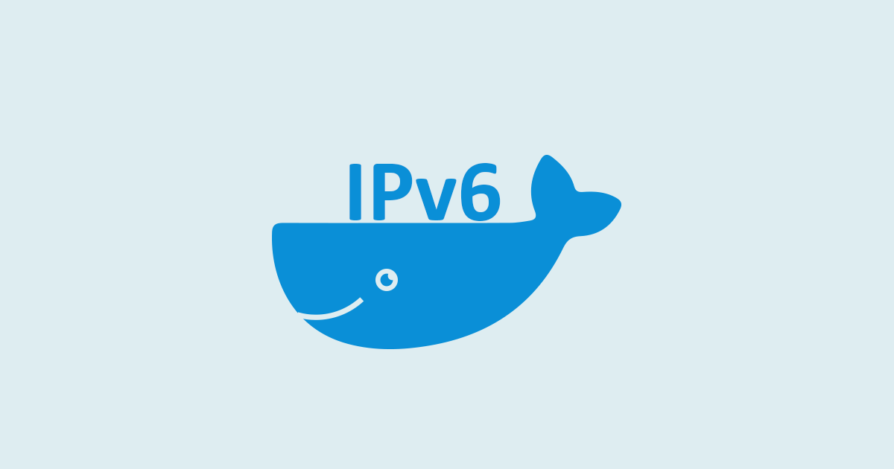
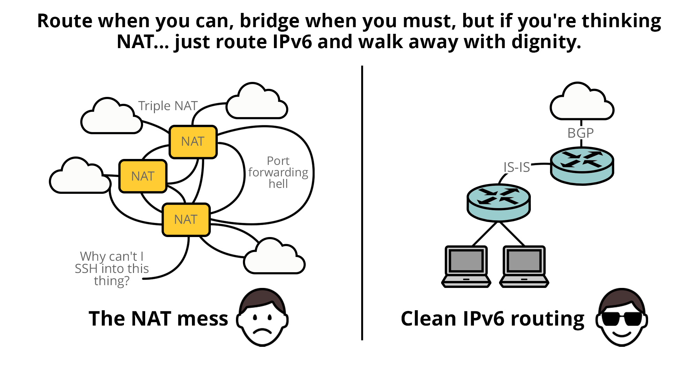
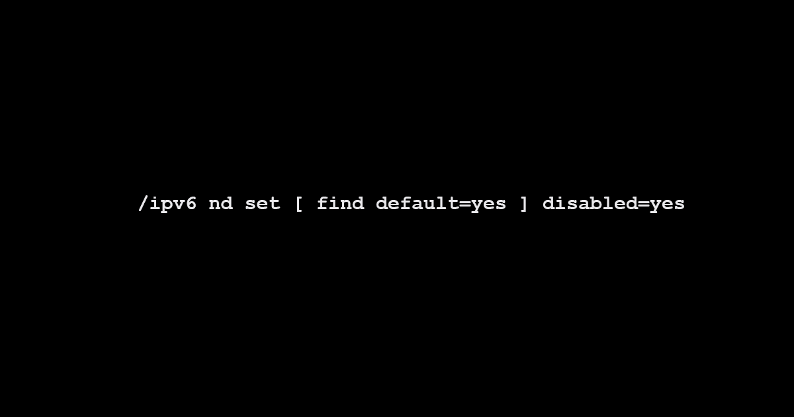
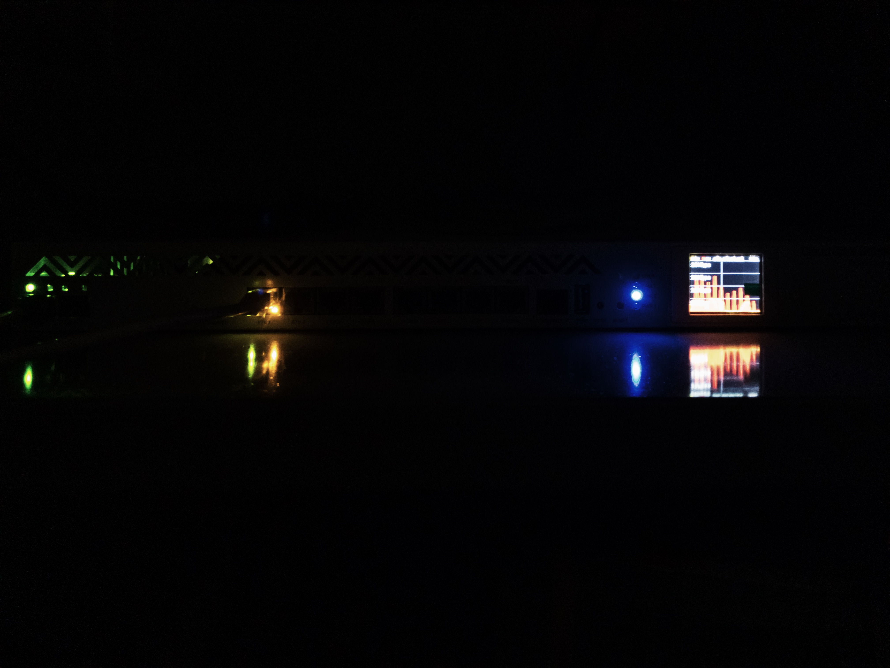

BGP Router ID Structuring in IPv6 Native Networks
How to design and structure BGP Router IDs in IPv6-native networks.
Public mirror and long-term archive
Network engineering, architecture, IPv6, routing, operations, and related writing mirrored from the canonical WordPress site.
How to design and structure BGP Router IDs in IPv6-native networks.

The operational and financial feasibility of MPLS-delivered IP Transit-To-The-Home (IPTTTH).

How to set up native routed IPv6 in Docker with routed mode.

Yet another blog article on IPv4, NAT, CGNAT, Hairpinning and native IPv6.

How to design OOB networks for ISPs, inspired by data centre networking.
This article examines iptables’ performance in filtering traffic at different processing stages within a Linux-based router. Tests were conducted comparing raw and filter tables’ efficiency in handling dropped traffic.

IPv6 Router Advertisement (RA) is a core component of SLAAC and DHCPv6, but it’s not required for all situations. Some network vendors enable RA by default, but you should disable it when not needed.
BGP false-alarm: What happened, and what can we learn from it?
Finding inconsistencies in vendor implementations of IPv6 subnet-router anycast addressing.

A rarely known tale about the origins of the Khasi Matrilineal System.
An extensive article on IPv6 best practices, architecture, and implementation with real-life examples for engineers and operators.
A small article detailing an observation on BGP Zombies in Juniper platform.

Explore an interesting observation on the Neighbour Discovery Protocol (NDP) in IPv6, in regard to Neighbour Solicitation and Advertisements.

An article about setting up an Autonomous System (AS) from scratch.
An insight into ISP operations in South East Asia with a particular focus on India.

A best practices guide for engineers looking to improve network performance, security, and consistency using MikroTik for edge routers and BNG.

An article on deploying Multi-WAN using RouterOS.

An article on Multi-WAN setups using consumer-grade ISPs.

An article on the limitations of CGNAT and what can be done to work around them.